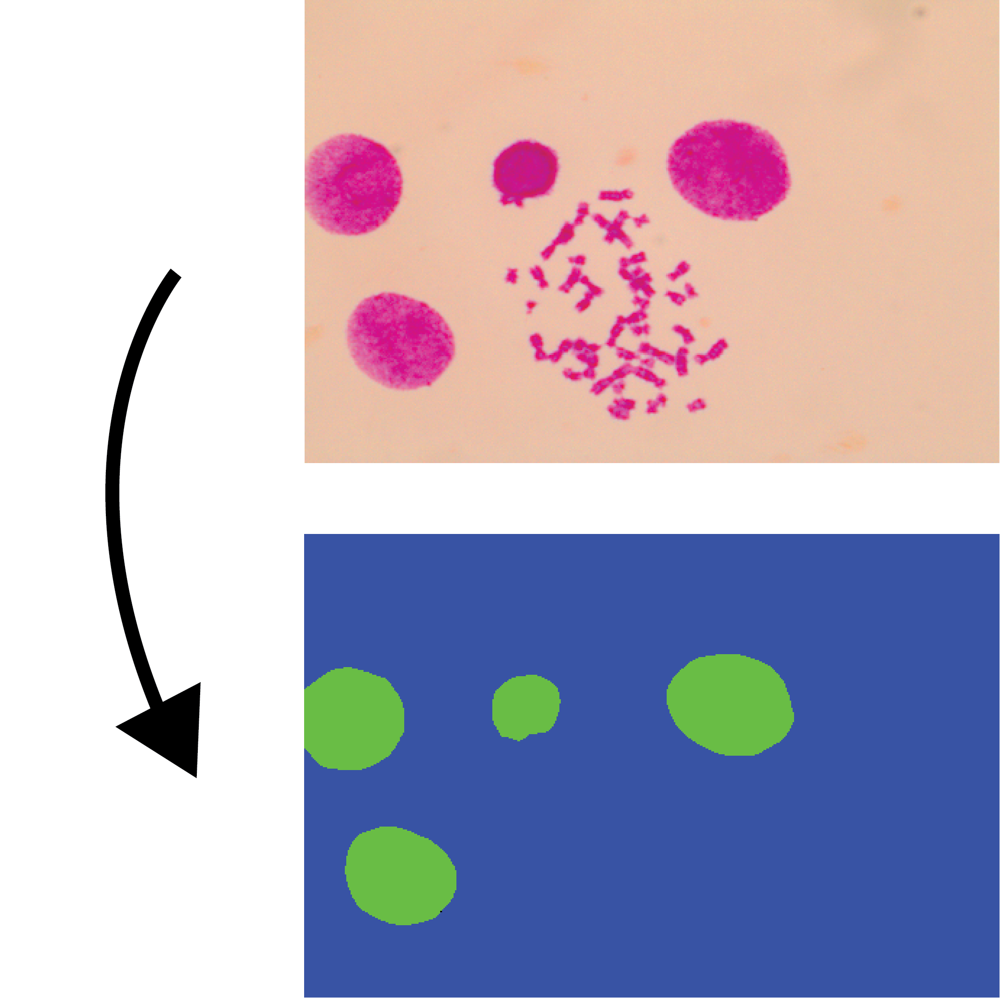
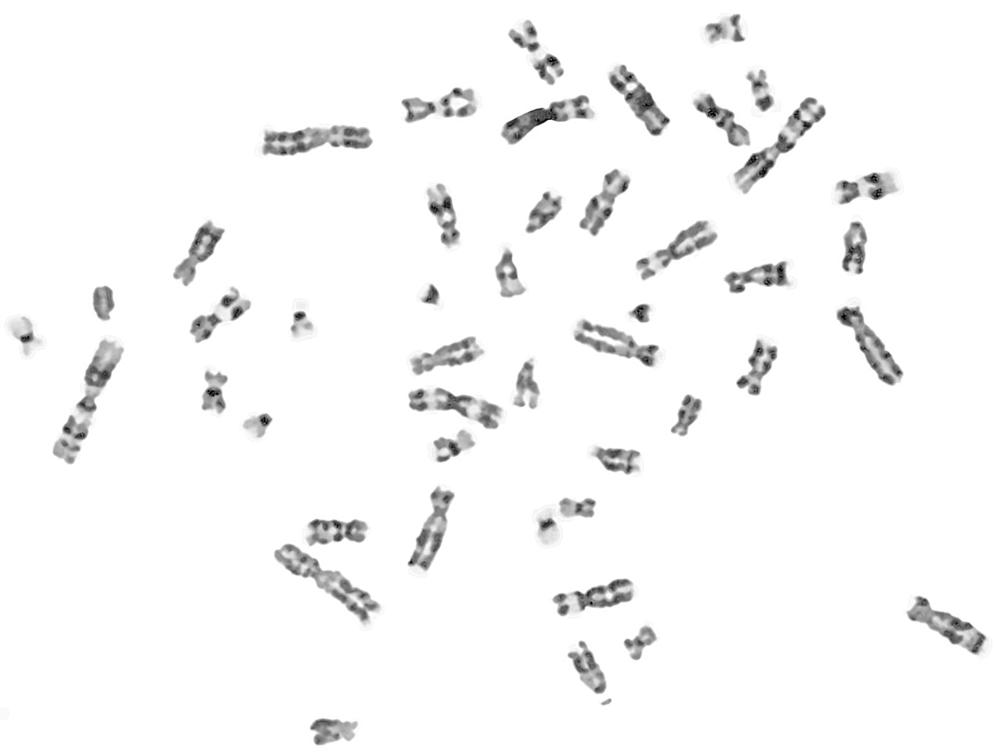

|
Hari Prasad
Email /
Google Scholar /
LinkedIn /
Github
I am a masters student in Artificial Intelligence, at the Centre for A.I, TKM College of Engineering, Kerala, India.
I've worked as an undergraduate research fellow on KSCSTE funded Research Project titled "Development of a fully automated Indigenous software for Efficient Karyotyping for Chromosome abnormality detection" and the Regional Cancer Center (RCC). I did my bachelors in Electrical and Electronics Engineering from APJ Abdul Kalam Technological University. I've received the IEEE PES Kerala Chapter Outstanding Student Volunteer Award 2020.
|
|
|
Research
I'm interested in Deep Learning, Image Processing, Optimization, and Causal Analysis. Much of my research is in the area of fundemental and theoretical A.I and experimenting with thought problems in the filed of A.I. Representative works are highlighted.
|
|

|
Deep Learning based Semantic Segmentation of Interphase Cells and Debris from Metaphase Images (In Production)
R S Remya,
S Hariharan,
Hari Prasad,
C Gopakumar
International Journal of Imaging Systems and Technology, 2022
Inspired from the results of UNet, a lighter version L-UNet is
developed and experimented. It shows IoU (Intersection over Union) of 0.9809
and F1-score of 0.9903.
|
|

|
Chromosome Image Enhancement for Efficient Karyotyping
R S Remya,
Hari Prasad,
S Hariharan,
C Gopakumar
IEEE ICITIIT, 2022
Image processing methods are systematically extended for the preprocessing of chromosome images, and a novel approach for denoising and enhancing the chromosome images is proposed.
|
|
{kind=link}